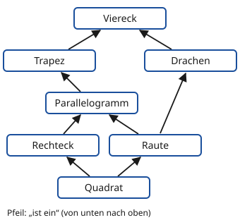

Das Haus der Vierecke
Mit einem KI-Tutor lernen
Ein KI-Tutor erklärt dir diese Seite und hilft dir bei den Aufgaben. Wähl deinen Assistenten:
Mit Claude öffnen Mit ChatGPT öffnen Mit Mistral Vibe öffnen
Du nutzt dein eigenes Konto beim Anbieter. Der Assistent ist kein Angebot von lernapps.net: lernapps liefert nur Inhalte und Aufgaben. Die Wahl gilt für alle Seiten, nur auf diesem Gerät.
Was du hier lernst
Du kannst gleich Vierecke nach ihren Eigenschaften ordnen und begründen, warum ein Quadrat auch ein Rechteck ist.
Selin: Für den Schulgarten planen wir Beete in Viereckform. Ich sortiere sie.
Piet: Ein Quadrat gehört doch zu den Rechtecken. Oder nicht?
Aufgabe
Lösung
zwei
Bei zwei rechten Winkeln könnten die anderen beiden noch schief sein. Beim Rechteck sind alle vier rechte Winkel.
vier richtige Antwort
Alle Ecken eines Rechtecks sind rechte Winkel.
keinen
Ein Rechteck hat in jeder Ecke einen rechten Winkel.
Ein Rechteck hat vier rechte Winkel.
Das Viereck ziehen
Wenn du wissen willst, welche Vierecke zusammengehören, probierst du aus, welche Eigenschaften du mit C und D einstellen kannst.
Die Ecken A und B bleiben liegen. Du ziehst C und D von Gitterpunkt zu Gitterpunkt, zwischen zwei Punkten liegt 1 cm. Mit der Tastatur wählst du eine Ecke mit der Tabulatortaste und bewegst sie mit den Pfeiltasten. Stelle der Reihe nach ein: zwei Paare paralleler Seiten, vier rechte Winkel, vier gleich lange Seiten, und dann alles zugleich. Lies jedes Mal unter dem Bild ab, was sich ändert.
Seiten: AB 5 cm · BC 3,2 cm · CD 5,1 cm · DA 4,1 cm · parallele Seitenpaare: 0 · rechte Winkel: 0 · Symmetrieachsen: 0 · punktsymmetrisch: nein
Die Figur steht am Start.Ein Viereck ABCD auf einem Gitter, A = (0 | 0) und B = (5 | 0). Drei Stellungen von C und D: C = (5 | 5), D = (0 | 5): alle Seiten 5 cm, zwei parallele Seitenpaare, vier rechte Winkel, vier Symmetrieachsen, punktsymmetrisch. C = (5 | 3), D = (0 | 3): Seiten 5 cm, 3 cm, 5 cm, 3 cm, zwei parallele Seitenpaare, vier rechte Winkel, zwei Achsen, punktsymmetrisch. C = (8 | 4), D = (3 | 4): alle Seiten 5 cm, zwei parallele Seitenpaare, kein rechter Winkel, zwei Achsen, punktsymmetrisch.
Was gehört zu was?
Wenn du an der Figur etwas entdeckt hast, hältst du es als Vermutung fest und prüfst sie dann.
Aufgabe
Lösung
Richtige Antwort: Die Aussage stimmt.
Wenn du vier rechte Winkel einstellst, ist die Figur ein Rechteck, auch bei vier gleich langen Seiten. Das ist erst eine Vermutung. Gleich begründest du sie.
Warum ist das so?
Wenn du begründen willst, warum ein Quadrat ein Rechteck ist, vergleichst du, was jedes Viereck mindestens haben muss.
„A ist ein B“ gilt, wenn A alle Eigenschaften von B hat. Ein Rechteck ist ein Parallelogramm mit vier rechten Winkeln. Ein Quadrat hat zwei Paare paralleler Seiten und vier rechte Winkel, dazu vier gleich lange Seiten. Es hat also alles, was ein Rechteck braucht.

© CC0-1.0Jeder Pfeil heißt „ist ein“. Folge den Pfeilen vom Quadrat nach oben.
Beim Quadrat gibt es zwei Wege nach oben, über das Rechteck und über die Raute. Darum ist jedes Quadrat ein Rechteck und auch eine Raute.
Merke
Wenn du den Satz später wieder brauchst, findest du ihn hier kurz zusammengefasst.
| Viereck | Eigenschaft |
|---|---|
| Trapez | mindestens ein Paar paralleler Seiten |
| Parallelogramm | zwei Paare paralleler Seiten |
| Rechteck | Parallelogramm mit vier rechten Winkeln |
| Raute | Parallelogramm mit vier gleich langen Seiten |
| Quadrat | Rechteck und Raute zugleich |
| Drachen | zwei Paare benachbarter gleich langer Seiten |
Achtung
Der Pfeil gilt nur in eine Richtung. Jedes Quadrat ist ein Rechteck, aber nicht jedes Rechteck ist ein Quadrat.
Übung
Wenn du prüfen willst, ob du das anwenden kannst, löst du Aufgaben mit neuen Zahlen und neuen Fällen.
Aufgabe
Lösung
Richtige Antwort: Die Aussage stimmt nicht.
Ein Rechteck mit den Seiten 5 cm und 3 cm hat vier rechte Winkel, aber nicht vier gleich lange Seiten.
Aufgabe
Lösung
Richtige Antwort: Die Aussage stimmt.
Eine Raute hat vier gleich lange Seiten, also auch zwei Paare benachbarter gleich langer Seiten.
Aufgabe
Lösung
Rechteck richtige Antwort
Ein Rechteck hat zwei Paare paralleler Seiten.
Raute richtige Antwort
Eine Raute ist ein Parallelogramm mit vier gleich langen Seiten.
Quadrat richtige Antwort
Ein Quadrat ist ein Rechteck und eine Raute, also ein Parallelogramm.
Drachen
Ein Drachen muss keine parallelen Seiten haben.
Trapez
Ein Trapez muss nur ein Paar paralleler Seiten haben, ein Parallelogramm hat immer zwei.
Rechteck, Raute und Quadrat haben zwei Paare paralleler Seiten.
Aufgabe
Lösung
Richtige Antwort: Rechteck – Parallelogramm mit vier rechten Winkeln; Raute – Parallelogramm mit vier gleich langen Seiten; Drachen – zwei Paare benachbarter gleich langer Seiten
Jede Beschreibung nennt, was dieses Viereck vom Parallelogramm oder Viereck unterscheidet.
Aufgabe
Drei Beispielaufgaben, jede mit ihrer Lösung:
Aufgabe Nr. 1
Ein Viereck hat diese Eigenschaften: zwei Paare paralleler Seiten, aber keine rechten Winkel und nicht alle Seiten gleich lang. Wie viele Symmetrieachsen hat es?
Tipp
Welches Viereck hat diese Eigenschaften? Zähle dann die Linien, an denen es sich auf sich selbst spiegeln lässt.
Lösung
- Die Eigenschaften gehören zum Viereck Parallelogramm. Es hat 0 Symmetrieachsen.
Richtige Antwort: 0
Aufgabe Nr. 2
Ein Viereck hat diese Eigenschaften: vier rechte Winkel, aber nicht alle Seiten gleich lang. Wie viele Symmetrieachsen hat es?
Tipp
Welches Viereck hat diese Eigenschaften? Zähle dann die Linien, an denen es sich auf sich selbst spiegeln lässt.
Lösung
- Die Eigenschaften gehören zum Viereck Rechteck. Es hat 2 Symmetrieachsen.
Richtige Antwort: 2
Aufgabe Nr. 3
Ein Viereck hat diese Eigenschaften: vier gleich lange Seiten, aber keine rechten Winkel. Wie viele Symmetrieachsen hat es?
Tipp
Welches Viereck hat diese Eigenschaften? Zähle dann die Linien, an denen es sich auf sich selbst spiegeln lässt.
Lösung
- Die Eigenschaften gehören zum Viereck Raute. Es hat 2 Symmetrieachsen.
Richtige Antwort: 2
Begründe in eigenen Worten
Wenn du einen Satz wirklich verstanden hast, kannst du ihn mit eigenen Worten begründen.
Offene Aufgabe
Erkläre in zwei bis vier Sätzen, warum jedes Quadrat ein Rechteck ist.
Eine gute Antwort enthält:
- Ein Rechteck ist ein Parallelogramm mit vier rechten Winkeln. Nachlesen
- Ein Quadrat hat vier rechte Winkel und zwei Paare paralleler Seiten. Nachlesen
- Ein Quadrat hat alle Eigenschaften eines Rechtecks (und noch eine mehr), darum ist es ein Rechteck. Nachlesen
- Ganze Sätze mit einer Begründung (weil …, darum …). (Form)
Lösung
Ein Rechteck ist ein Viereck mit vier rechten Winkeln und zwei Paaren paralleler Seiten. Ein Quadrat hat vier rechte Winkel und zwei Paare paralleler Seiten. Es hat also alles, was ein Rechteck braucht, und dazu vier gleich lange Seiten. Darum ist jedes Quadrat ein Rechteck.
Rückblick
Du hast ein Viereck gezogen, bis es ein anderes war. Du kannst Vierecke nach Eigenschaften ordnen. Du kannst mit „ist ein“ begründen, warum ein Quadrat ein Rechteck ist.
Fehler gefunden oder eine Idee für diese App?